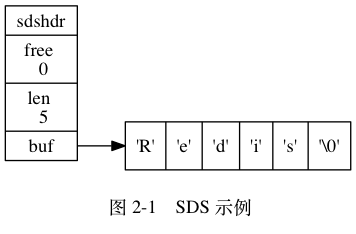
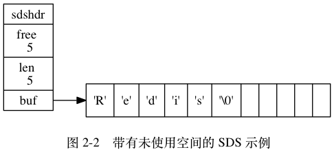

每个 sds.h/sdshdr 结构表示一个 SDS 值：
struct sdshdr {
// 记录 buf 数组中已使用字节的数量
// 等于 SDS 所保存字符串的长度
int len;
// 记录 buf 数组中未使用字节的数量
int free;
// 字节数组，用于保存字符串
char buf[];
};
图 2-1 展示了一个 SDS 示例：
free 属性的值为 0 ，
表示这个 SDS 没有分配任何未使用空间。len 属性的值为 5 ，
表示这个 SDS 保存了一个五字节长的字符串。buf 属性是一个 char 类型的数组，
数组的前五个字节分别保存了 'R' 、 'e' 、 'd' 、 'i' 、 's' 五个字符，
而最后一个字节则保存了空字符 '\0' 。
SDS 遵循 C 字符串以空字符结尾的惯例，
保存空字符的 1 字节空间不计算在 SDS 的 len 属性里面，
并且为空字符分配额外的 1 字节空间，
以及添加空字符到字符串末尾等操作都是由 SDS 函数自动完成的，
所以这个空字符对于 SDS 的使用者来说是完全透明的。
遵循空字符结尾这一惯例的好处是， SDS 可以直接重用一部分 C 字符串函数库里面的函数。
举个例子，
如果我们有一个指向图 2-1 所示 SDS 的指针 s ，
那么我们可以直接使用 stdio.h/printf 函数，
通过执行以下语句：
printf("%s", s->buf);
来打印出 SDS 保存的字符串值 "Redis" ，
而无须为 SDS 编写专门的打印函数。
图 2-2 展示了另一个 SDS 示例:
"Redis" 。buf 数组分配了五字节未使用空间，
所以它的 free 属性的值为 5
（图中使用五个空格来表示五字节的未使用空间）。
接下来的一节将详细地说明未使用空间在 SDS 中的作用。